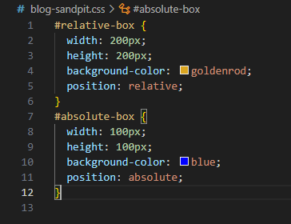
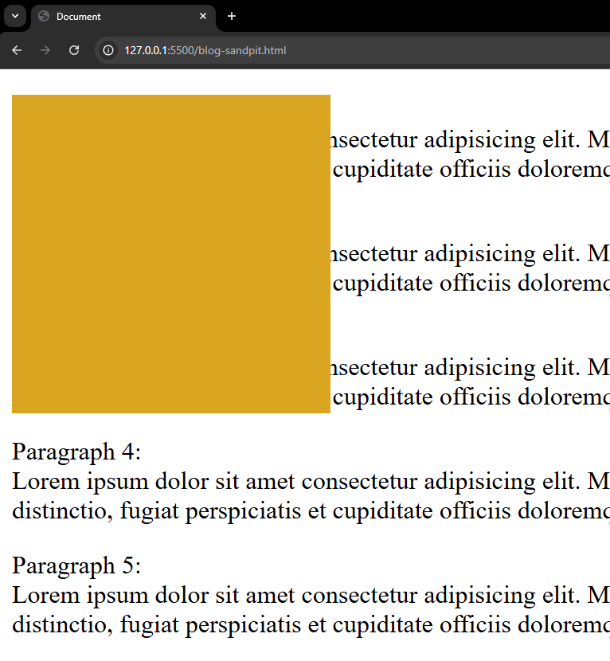

20th June 2025
What are the differences between relative, absolute, and fixed
positioning?
The position property in CSS determines where an element is placed on a
browser page. Let's explore the relative, absolute, and fixed positions.
-
Relative positions the element in a way that is
relative to where it normally is on a page.
-
Absolute positions the element relative to it's
closest ancestor.
-
Fixed positions the element relative to the viewport
used to view the content.
Now let's look at examples for each position value.
Relative
Using values like top, right, bottom, and left, you can move an element
around the page, relative to it's normal starting position.
In the example below, I created a box called "relative-box". The box
started in the top left of the page. By using the "left" value, I moved
the box 200px from the left of it's normal starting position.

Absolute
The absolute value places an element in relation to it's nearest
ancestor, or containing class. If the containing class is moved, then
the element with the absolute position value will also move with it.
In the example below, I brought back the "relative-box" and created a
new blue box within it called "absolute-box". When I moved the
"relative-box", the "absolute-box" moved too.



Fixed
The fixed value fixes the element in place according to the viewport or
web browser. Again by using values like top, right, bottom, and left,
you can fix an element in place, scroll up and down the page, and the
fixed element will "stick" to the screen.
In the example below, I created a box called "fixed-box". I placed some
text below it, and as I scrolled down, the box stayed fixed in the top
left-hand corner of the screen. First it covered paragraphs 1-3, then it
covered paragraphs 4-6.

Now let's look at two additional position values.
-
Sticky positions the element based on the scroll
position.
-
Static positions the element in the default position
for that element.
Let's look at some examples of sticky and strong positions.
Sticky
On the surface, the sticky value is very similar to the fixed value. It
"sticks" an element to the scroll bar, meaning that when you scroll on
your web browser, the element will move along with your scroll. This
differs from the fixed value because the fixed value "sticks" the
element to your viewport or web browser screen.
In the example below, I created a box called "sticky-box". I placed some
text below it and the box didn't cover the text until I scrolled down
the page. In the "fixed-box" example, the box covered the text below it
regardless of whether I scrolled down the page or not. That is the
difference between the fixed and sticky values in action.

Static
The static value is the default position for elements. This value sets
the element to it's default position and it cannot be moved. Unlike the
rest of the values explored above, the static value is unaffected by the
top, right, bottom, and left values.
In the example below, I created a box called "static-box". I set the
left value to 200px and the top value to 200px, yet the box did not
move.